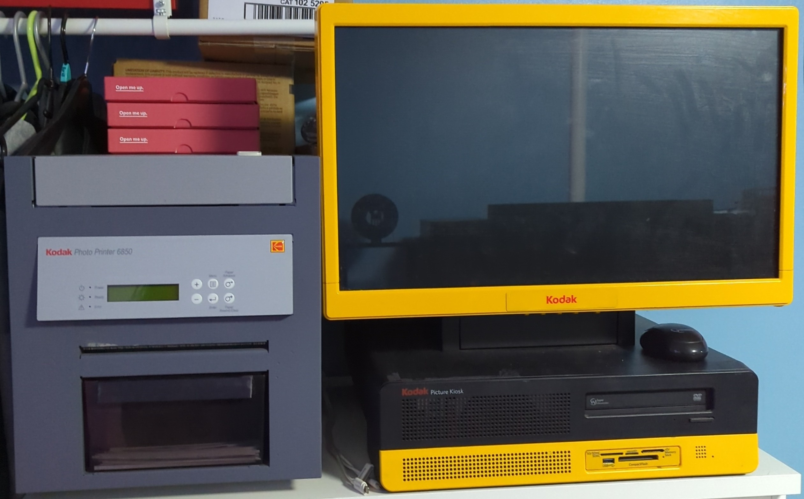

Bumblebee

Kodak G4XL II Picture Kiosk| Owned from 2023
This is Bumblebee i was given it by a shop that was going to dispose of it. It had a failed HDD which has become a major issue with trying to use it.
I have changed out the HDD for an SSD and installed Windows 10 IoT LTSC on it and have tried to find as many drivers for it which has been hard to do.
Bumblebee has a issue when printing in the correct size as it's missing the original OS and software it had come with. I have been trying to track it down to restore it back to it's orignial state.
CPU: Intel Core i5-4570
GPU: Intel HD Graphics 4600
Memory: 8GB
Storage: 180GB SSD
Screen: Touchscreen 1920 x 1080 LCD
OS: Windows 10 IoT LTSC